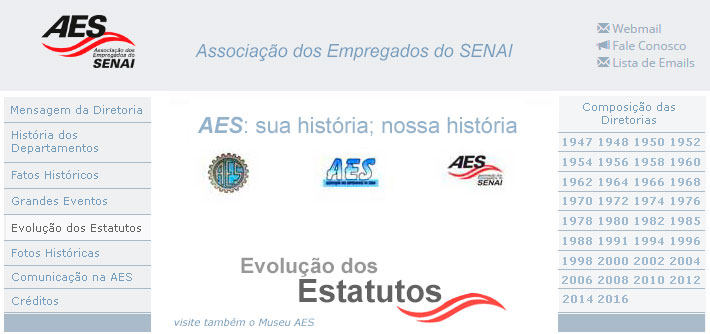

A análise das diferentes versões dos Estatutos da AES a das atas das Assembleias Gerais que as aprovaram permite conhecer um novo aspecto da história da nossa Associação, de um ponto de vista institucional diferenciado muito interessante. As mudanças estatutárias caracterizam as demandas vividas naquele momento específico pela AES. De cada Estatuto selecionamos alguns aspectos que mostram a evolução desse importante documento, que tem a finalidade de nortear o funcionamento da AES.
AGOSTO DE 1946 – ELABORAÇÃO DO ESTATUTO PROVISÓRIO Em agosto de 1946 foi composta oficialmente pelo SENAI uma Comissão de Empregados encarregada de elaborar um ESTATUTO PROVISÓRIO visando a criação de um grêmio associativo, como era comum nas grandes empresas na época. Referido grêmio, baseando-se nos princípios de solidariedade mútua, deveria ter como objetivo criar e administrar serviços e benefícios para os empregados do SENAI e seus dependentes. Essa Comissão tinha a seguinte composição: Presidente – Atahualpa Guimarães; Membros – Rubens de Azevedo, Mario Portes, João Conti Aguiar, Maria de Lourdes Licco, Luiz Gonzaga Marcondes Nistch, Otilia Santos, Valerio Giuli, Sylvio Godoy Alcântara, Lauro Esteves Trauczynski, Orlando de Toledo Lara e Luiz Gonzaga Ferreira. O Estatuto Provisório elaborado pela Comissão foi distribuído para todos os empregados do SENAI, para conhecimento, apreciação e apresentação de sugestões.
21/11/1947 – ASSEMBLEIA GERAL DE FUNDAÇÃO DA AES Em 21/11/1947 foi realizada uma Assembleia Geral, especialmente convocada para oficializar a fundação da ASSOCIAÇÃO DOS EMPREGADOS DO SENAI, tendo como objetivos “aprovar, a título precário, o Estatuto elaborado pela Comissão e proceder às eleições para os cargos de Diretoria, Conselho e Departamentos”. A Assembleia foi muito concorrida, registrando-se a presença de 487 empregados do SENAI. As escolas do interior enviaram representantes, portadores das sugestões para o Estatuto e dos votos para os cargos eletivos. Pelo número de votos contabilizados, estima-se que 146 empregados do interior estiveram representados na Assembleia, totalizando um colégio eleitoral de, no mínimo, 633 pessoas. Foram eleitos os membros do corpo diretivo, em caráter provisório e com prazo de gestão determinado até 28/02/1948. Esse corpo diretivo tinha como objetivos estabelecer as bases de funcionamento da nova Associação e a elaboração do Estatuto definitivo.
21/11/1947 – 1º ESTATUTO SOCIAL DA AES – PROVISÓRIO Em seu Capítulo I, o Art. 1º do Estatuto Provisório determinava: “A Associação dos Empregados do SENAI, fundada em 21/11/1947, com sede administrativa e foro na cidade de São Paulo, é uma entidade de duração indeterminada, tendo por fim desenvolver entre os associados o espírito agremiativo e de solidariedade, servi-los, assisti-los e trabalhar pelo seu bem estar”. O Art. 5º previa: “A Associação cooperará ativamente, por intermédio de sua Diretoria, com o Departamento Regional do SENAI, a fim de desenvolver entre ambos relações que possibilitem a formação de um ambiente favorável à sua coexistência, num plano de entendimento sadio e construtivo”. As redações acima foram mantidas por mais de 50 anos, com pouquíssimas modificações no texto, por traduzir, de forma inequívoca, os objetivos da AES. Entre as disposições dos demais artigos do Estatuto Provisório, salientamos: • Somente os empregados de SENAI podem ter a condição de associados;
17/01/1948 – 2º ESTATUTO SOCIAL DA AES A Diretoria recém eleita, com o curto mandato de três meses, convocou a Assembléia Geral para votar o novo Estatuto Social da AES, com poucas alterações em relação ao anterior. Manteve basicamente os mesmos artigos e redação, com as seguintes modificações: • Mudança de nome de Departamentos: Cooperativa de Consumo para Abastecimento e Caixa Beneficente para Beneficente, mantendo-se as demais denominações;
03/06/1957 – 3º ESTATUTO SOCIAL DA AES Somente após 10 anos de existência da AES foi realizada uma Assembleia Geral para votação de nova redação para o Estatuto. A estrutura foi preservada e poucos artigos foram modificados: • Estende aos empregados da AES (que na época eram em número apreciável por causa do Abastecimento e da Administração do Restaurante do SENAI) o direito de associar-se;
11/06/1966 – 4º ESTATUTO SOCIAL DA AES Quase 10 anos haviam passado para que se promovessem alterações oficiais no Estatuto em vigor. Mas, na ata da Assembleia Geral realizada em 11/06/1966 consta que a nova redação do Estatuto contempla modificações anteriormente aprovadas em Assembleias Gerais realizadas em 14/02/1962, 12/02/1966 e 28/05/1966, não registradas em cartório. O novo Estatuto mantém a integridade dos capítulos iniciais existentes e inclui importantes modificações: • Os aposentados do SENAI adquirem o direito de associar-se, juntamente com os empregados do SENAI e da AES. Mas somente os empregados do SENAI poderão votar e ser votados no processo eleitoral; Um importante fato, ocorrido na ocasião, foi registrado no novo Estatuto: a Lei 9.376 de 07/06/1966, publicada no Diário Oficial do Estado de 08/06/1966, declarou a AES como órgão de utilidade pública, o que a isentou do pagamento de tributos estaduais.
10/02/1968 – 5º ESTATUTO DA AES Esse Estatuto sofreu uma grande reformulação em sua composição, ganhando um teor mais técnico e moderno, embora tenha mantido a redação original de muitos artigos. Destacamos as alterações mais importantes: • Estabelece uma nova ordem de classificação dos órgãos que compõem a AES, incorporando mais três: Assembleia Geral, Conselho Técnico Consultivo (antigo Conselho Consultivo Fiscal), Diretoria, Comissão de Contas, CABES, Departamentos e Núcleos da AES;
20/04/1982 – 6º ESTATUTO SOCIAL DA AES Passam-se 14 anos até que o Estatuto Social da AES seja novamente reformulado e, desta vez, com muitas e importantes modificações, embora os objetivos originais da AES tenham sido mantidos. A modificação mais impactante refere-se ao processo eleitoral: no lugar da eleição pelos associados de candidatos para cargos previamente determinados, passa a ser eleito um Corpo de Administração. Vejamos as modificações mais importantes: • Constituem-se como órgãos estatutários da AES: a Assembleia Geral e o Corpo de Administração, que compreenderá o Conselho Deliberativo, o Conselho Fiscal e a Diretoria (note-se que o antigo Conselho Técnico Consultivo foi dividido em dois: Deliberativo e Fiscal);
19/09/1989 – 7º ESTATUTO SOCIAL DA AES Providenciada revisão de redação para esclarecimentos de artigos que geraram dúvidas, com poucas modificações importantes em relação ao Estatuto anterior.
26/10/1993 – 8º ESTATUTO SOCIAL DA AES Esse Estatuto apresenta uma série de modificações muito importantes: • Novamente os empregados da AES passam a ter o direito de associar-se, assim como os empregados da ativa e os aposentados do SENAI. Também poderão associar-se, na condição de sócios agregados, os dependentes de associado falecido;
10/11/1999 – 9º ESTATUTO SOCIAL DA AES Passados seis anos, foi feita uma revisão do Estatuto em poucos itens, visando atender uma nova realidade vivida pela Associação. As modificações mais importantes são as seguintes: • Poderão associar-se à AES: os empregados do SENAI, os empregados da AES, aposentados do SENAI, empregados de entidades conveniadas, ex-empregados do SENAI, ex-dependentes de associados (solteiros) e ex-dependentes de associados falecidos;
20/12/2003 – 10º ESTATUTO SOCIAL DA AES Votado em duas Assembleias Gerais, realizadas em 06 e 20/12/2003, esse Estatuto foi elaborado em atendimento ao disposto no novo Código Civil, Capitulo II – Das Associações e seus respectivos artigos, aprovado pela Lei nº 10.406, de 10/01/2002. Pela primeira vez, em mais de 50 anos, o Capítulo I do Estatuto foi redigido de forma diferente ao estabelecido em 1947. Aliás, não só o texto citado, mas todo o escopo do Estatuto foi alterado. O artigo 5º do Estatuto dispõe: “A finalidade precípua da Associação é promover a união e o bem estar de todos os seus associados, razão pela qual tem por objetivo: • Desenvolver atividades de natureza assistencial, esportiva, social, cultural, financeira e de saúde, visando integrar e melhorar a qualidade de vida de seus associados; Como se observa, mesmo com a nova redação, a finalidade da AES continua coerente com a de “desenvolver entre seus associados o espírito agremiativo e de solidariedade, servi-los, assisti-los e trabalhar pelo seu bem estar”, como constou em seu primeiro Estatuto. As principais modificações são as seguintes: • São associados: os empregados do SENAI e o ex-empregado aposentado do SENAI;
07/11/2014 - 11º ESTATUTO SOCIAL DA AES Votado e aprovado na Assembleia Geral, realizada em 07/11/2014, esse Estatuto foi elaborado em atendimento ao disposto no novo Código Civil, Capitulo II – Das Associações e seus respectivos artigos, aprovado pela Lei nº 10.406, de 10/01/2002. O escopo do Estatuto foi mantido e o texto recebeu alguns realinhamentos e inserções para estabelecer regras entre outras, sobre as novas competências dos membros da Diretoria e sobre a elegibilidade da Associação dos Empregados do SENAI – AES para a contratação de Planos de Saúde de acordo com a Regulamentação da ANS. As principais alterações são: • inclusão no item II do artigo 5º, que trata da finalidade precípua da Associação, da informação sobre a Decisão Judicial que assegura à AES o direito de contratar planos de saúde: Celebrar convênios, contratos de planos de saúde e odontológico, quaisquer contratos de seguros, de prestação de serviços ou fornecimento de produtos, tudo em benefício dos Associados, nos estritos termos do presente Estatuto;
Finalizando, a análise da evolução dos estatutos da AES demonstra a estabilidade institucional de nossa Associação, ou seja, a Associação dos Empregados do SENAI - AES tem em seu Estatuto os instrumentos jurídicos necessários para regular suas questões essenciais e garantir o seu bom funcionamento. |